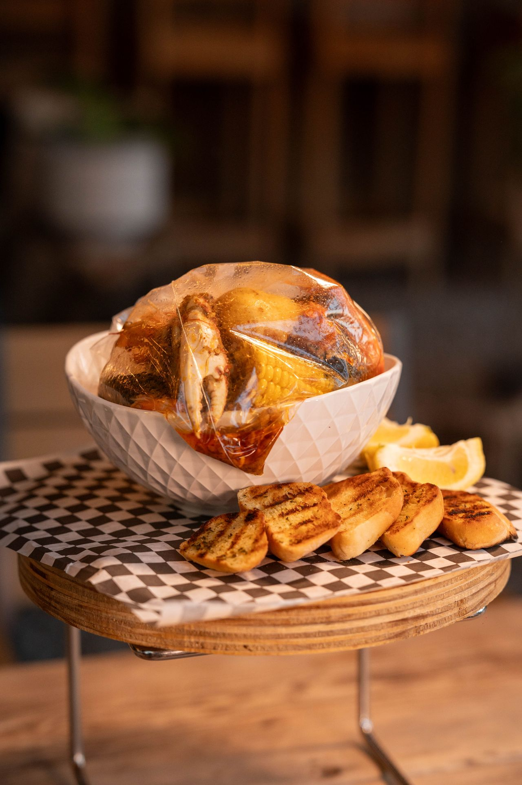

Food & Dining
Find a variety of places for breakfast, burgers, seafood, steak, desserts, and dinner with a view.
Breakfast
Eggslut
A casual breakfast spot known for its egg sandwiches. This is a nice option for visitors wanting something quick before exploring Las Vegas.
Chicken & Burgers
The Chicken Shack
A casual restaurant serving chicken fingers, wings, and different sauces.
With Love, Always
A burger spot serving smashburgers, fries, and other casual food options.
Seafood & Buffets
Hot N Juicy Crawfish
A seafood restaurant where visitors can enjoy seafood boils with different sauces and spice levels.

Imperial Sushi & Seafood Buffet
A buffet with sushi, seafood, and other dishes. This is a good option for visitors who want a variety of food in one place.
Steak
Golden Steer Steakhouse
A classic Las Vegas steakhouse known for its steaks and old-fashioned atmosphere. This is a nice place for visitors who want a special dinner.
Dinner with a View
Eiffel Tower Restaurant
Enjoy French dining with views of the Las Vegas Strip and Bellagio Fountains.
LAGO
An Italian restaurant at Bellagio where visitors can enjoy their meal with views of the fountains.
Top of the World
A restaurant at The STRAT that offers views of Las Vegas from a rotating dining room.
Desserts
Bake the Cookie Shoppe
A dessert shop with cookies and other sweet treats. This is a nice stop for visitors who want something sweet during their trip.